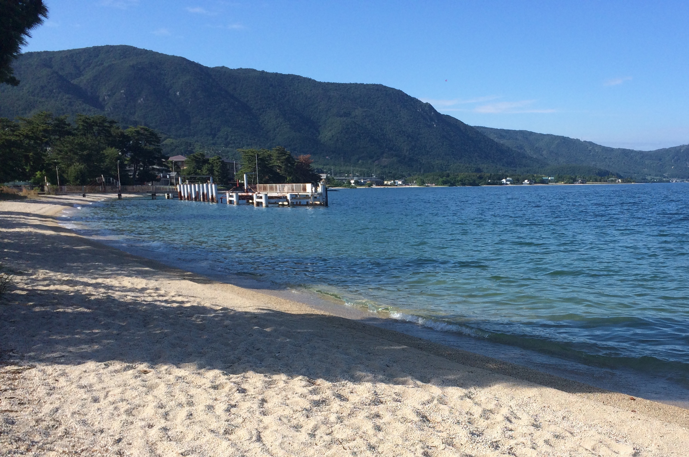
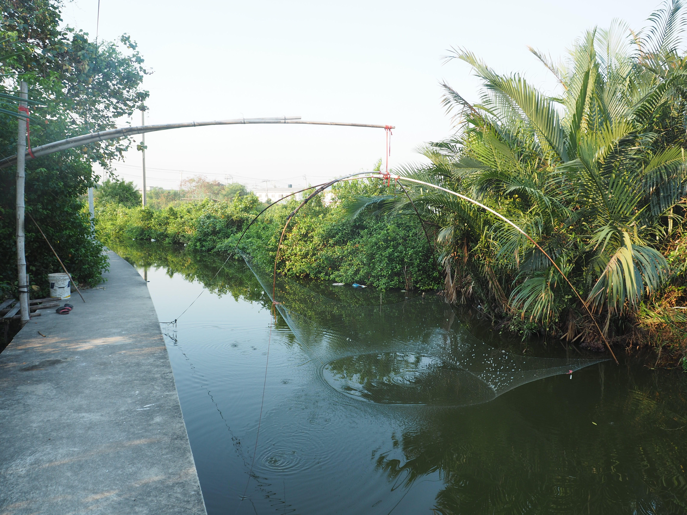
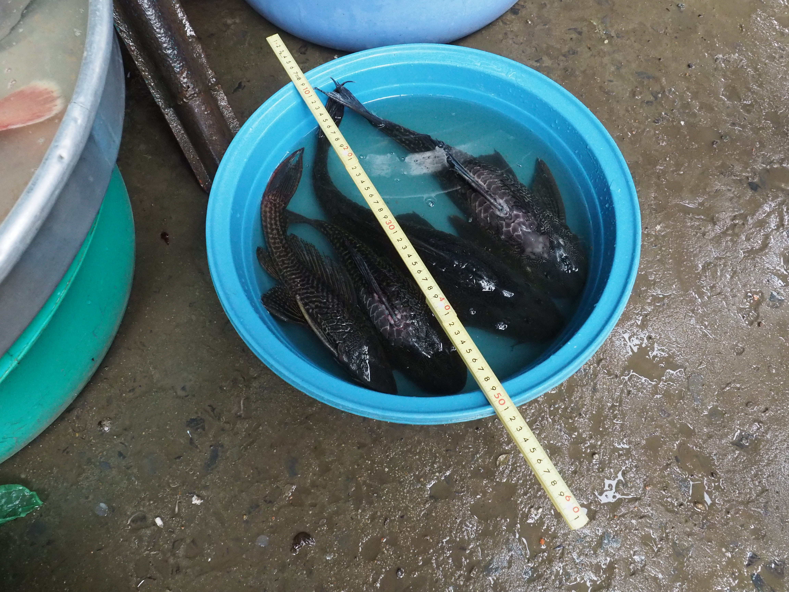
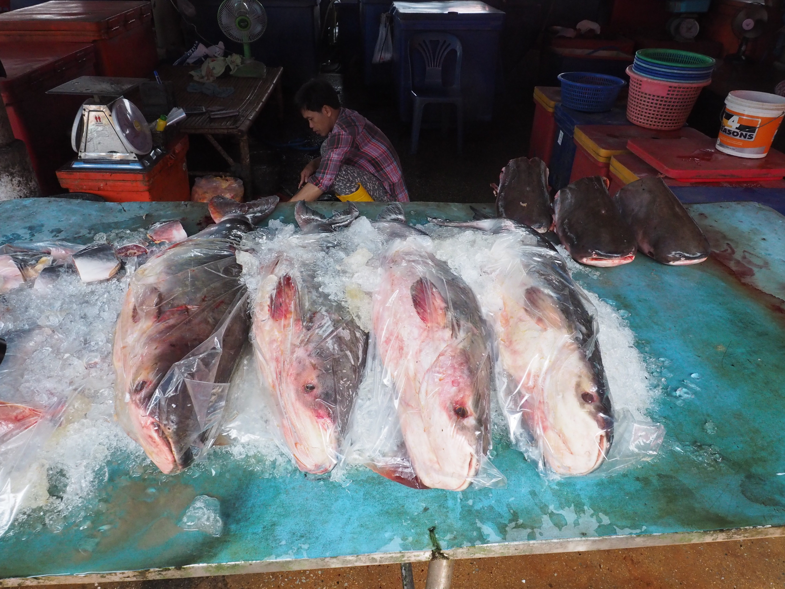

Fieldwork
Case 01: Fish collection in Lake Biwa, Shiga, Japan

OLYMPUS E-M5 Mark-Ⅱ with M.ZUIKO DIGITAL 12 – 50 mm @ Beach landscape of Lake Biwa, Shiga, Japan
This page is under construction.
Case 02: Fish collection in Samut Prakan province, Thailand

OLYMPUS E-M5 Mark-Ⅱ with M.ZUIKO DIGITAL 12 – 50 mm @ Fish collection in an estuarine study site, Samut Prakan, Thailand
This page is under construction.
Case 03: Interview survey in the lowermost Chao Phraya River Delta, Thailand

OLYMPUS E-M5 Mark-Ⅱ with M.ZUIKO DIGITAL 12 – 50 mm @ Dipping net used by local people, Bangkok, Thailand
This page is under construction.
Case 04: Market survey in the Mekong Delta, Vietnam

OLYMPUS E-M5 Mark-Ⅱ with M.ZUIKO DIGITAL 12 – 50 mm @ Invasive suckermouth catfish sold at a local market, Mekong Delta, Vietnam
This page is under construction.
Case 05: Market survey in the lowermost Chao Phraya River Delta, Thailand

Google Pixel 3 @ Distributing reservoir, Rayong, Thailand
This page is under construction.
Case 06: Fish collection in the Rayong Province, Thailand

OLYMPUS E-M5 Mark-Ⅱ with M.ZUIKO DIGITAL 12 – 50 mm @ Fish collection by using gillnet in a reservoir, Rayong, Thailand
This page is under construction.